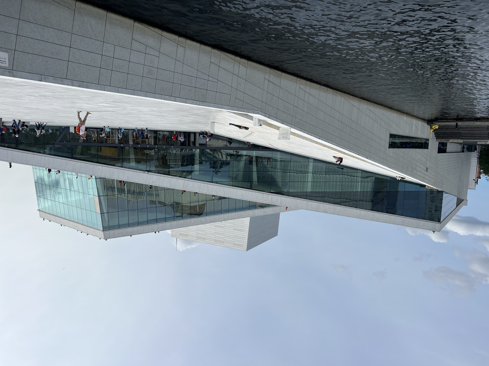
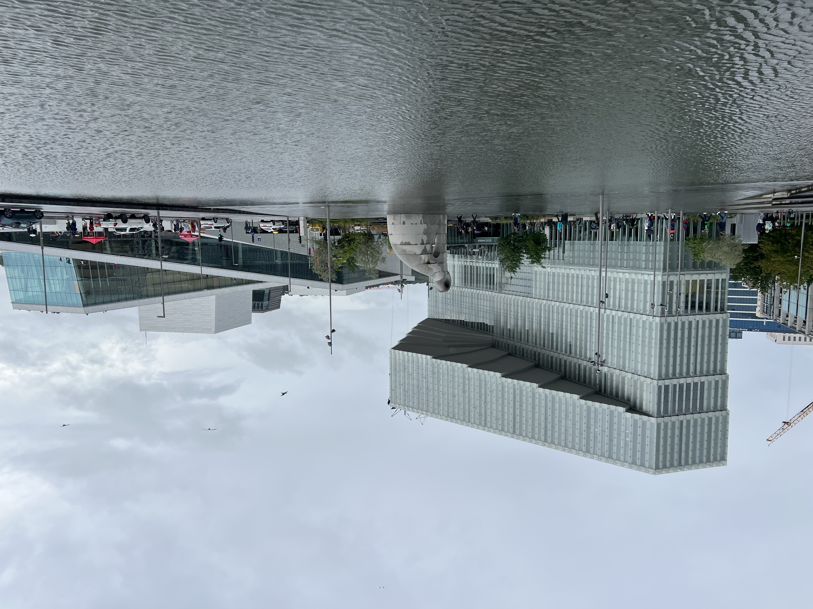
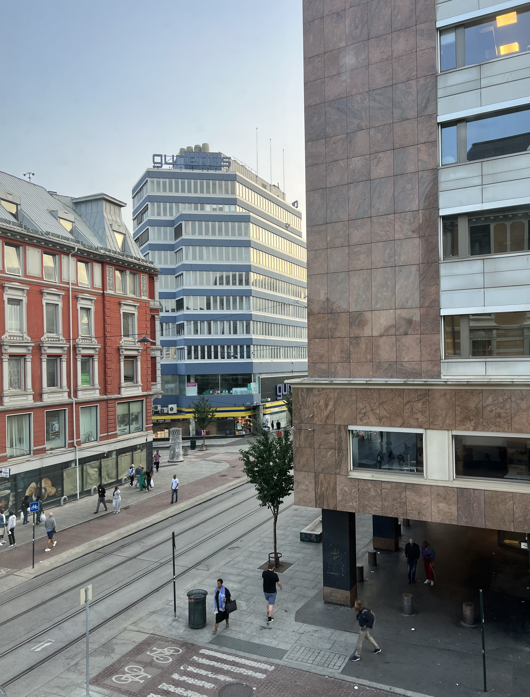

Hei og velkommen! I've always wanted a terrible html website (à la Space Jam and the Heaven's Gate cult - two things commonly referred
to in the same sentence) and so here's my attempt to document my year abroad in Norway. Enjoy :D
Nothing like a couple mean 13 year olds to really inspire me to pick up the pace learning Norwegian! This week I revived my hockey career as
a coach, where I’ll be assisting with two teams, U12 and U13, at a local club this year. Hockey has been such a large part of my life for
a long time, and sharing the game in a country where it’s not huge - surprising, given Norwegians love every other winter sport - was one
of my biggest goals for this year.
In short, it’s been amazing so far. Stepping back on the ice was easy and natural, and each practice has flown by. But! As I’ve quickly found
out, there’s little filter, really ever with the kids, but particularly about my Norwegian accent (or lack thereof). When I’ve tried to
use Norwegian words or phrases around my roommates - like mentioning I wanted to go hiking in the nearby area of Akershus - I’ve mostly
gotten polite nods or corrections in pronunciation that usually end in a “close enough” after a few mostly futile attempts. With the kids,
no such luck. At my last practice, trying to learn the Norwegian words for blue and red (blå and rød), I asked two of the kids on the team
for help. After repeating the pronunciation back (blow and rue-uh, but obviously I’m not the authority here), they both looked at each
other and laughed. Humbling! A couple minutes later, I got a grimace from another kid when I asked what his name was in Norwegian (one of
very few phrases I felt confident about) before he told me my Norwegian didn’t make sense.
On another note, it rains here! This is not remotely a surprise after even the most cursory Google search about the climate in Norway, but
I am quickly finding out the vast scientific consensus is no lie. I’m used to the type of rain in Arizona, where a storm is just some
quirky thing and rarely something that requires a rain jacket or umbrella. Caught in a storm? You might as well stand in it because it’s
the last you’re getting for a couple months. Here, you just end up already wet when you reenter the rain a couple hours later. To clarify,
I own a very capable rain jacket - I have all the resources at my disposal to avoid getting soaked. But, for whatever reason, when it
comes to walking out the door, my years of Arizona residency take over and I leave my apartment exposed to the elements. Anyways, this is
how I reached my hockey practice yesterday evening, running the walk from the metro stop to the rink, hockey bag slung over my shoulder
and avoiding the large puddles pooling on the mostly gravel path. Survival of the fittest and all that.
Otherwise, today marks one week in Norway! It feels like I’ve lived several lifetimes here already, but I’m excited for everything more that’s
still to come.
It’s a little past noon, and I’m sitting on the second floor of the Oslo public library. The crowd is mixed - students like myself
clustered around desks and outlets, kids from school groups in yellow crossing guard vests running outside of the watch of their teachers,
and tourists wandering in from the nearby museums to snap a couple pictures before braving the rain once again. It’s an impressive
building, even in a city that noticeably dedicates itself to public spaces. Sitting on the harbor, it’s an Oslo landmark along with
the nearby opera house (operahuset). But regardless of the place, it’s here that I've come to say I'm nearly a week into my stay in
Norway.
|  |  |
| Oslo's operahouse (with a very walkable roof) | With the public library next door on the left |
The first few days have been a blur, a mix of ikea stops, tourist sights, and return trips to ikea after realizing that I still don’t actually
have bedsheets. This too has been while not knowing much of the language at all - something that's made little things like getting
groceries more difficult so far. The time I've spent looking blankly at different brands of greek yogurt is absurd. Fortunately, most
people speak good English - particularly close to the city center, which has made asking for help relatively easy. Even still, I'm trying
to pick up as much Norwegian as I can, though right now that's mostly limited to hei's (means hi, pronounced the same way) and unnskyld
med's (means excuse me, pronounced oon-shill may). It's a work in progress - though I've been assured that Norwegians sometimes can't even
understand other Norwegians because some regional dialects are so strong.
Yesterday was my first day at KRUS, the University College of the Norwegian Correctional Service, where I’ll be spending my year
researching Electronic Monitoring - essentially house arrest - in Norway. Already, the Norwegian approach to corrections is much different
than anything I’ve worked with before. Here, the training to become a correctional officer is a two-year program (and may become a three-
year bachelor's degree soon), where in addition to practical training students get classes in social work, sociology, philosophy, and
criminology. While security is still a primary focus in prison, there's also a much greater emphasis on job training, education, and
living in a way that prepares people for life after their release. For one, Norwegian prisoners have a shared kitchen and make their own food, with
access to kitchen tools up to and including knives.
On one last note, my room is finally starting to look like a place where someone lives! Last night I set up my cork board, something for me
that always makes a place a home. It was the first thing I set up in my Barrett dorm, and the last thing I took down moving out from my
apartment a couple weeks ago. I’m hoping to add a couple more stickers and postcards as I travel around here, but for now it’s nice to
have some reminders of home :)
|  | |
| Room reveal! | And the view out my window |
More of these to come soon hopefully! Ha det bra